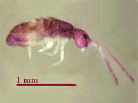

|
|
|
| Important members of the mesofauna group of soil animals include:
These are important members of the food web: the worms consuming soil organic matter and plant residues and arthropods such as collembola which predate nematodes. Arthropods |
 Collembola (Spring Tails) These important members of the food web are primitive wingless insects, usually less than 2 mm long, that live in soil and crop litter. They eat the fungi that decompose organic matter. Like other insects, they have the three main body parts (head, thorax, and abdomen), three pairs of legs, and a pair of antenna. Instead of wings these insects have a forked "tail" called a furcula, or springtail. They can flick their tails to jump 10 cm or so out of harm's way. They are very easy to spot in small puddles in farmyards after a heavy rain. Look for puddles with a purplish scum. Stick in your finger to pick up a little of the scum and then watch the springtails fly! Worldwide, Collembola might be the most populous insect often swarming in great numbers on the surface of stagnant water, walls, and snow. They are also called snow fleas. Generally, Collembola are considered to be beneficial to soils and keep down the large numbers of fungi and algae and remove decaying vegetation. However they can damage young seedlings, sometimes boring holes into the roots and stems. |

Mites Mites (meaning "little characters") are among the smallest of the soil arthropods rarely longer than 1 mm and difficult to see with the naked eye. They can number several hundred thousand per square metre of soil! Mites are wingless and display a wide variety of eating habits. Some feed on fungi; others dine on dead plants and animals. Still others are predacious, and attack tiny insects, eggs and larvae. Some mites bore into rock like the tip of a drill. Certain mites can be very damaging to plants, particularly birch, poplar and spruce trees. Nevertheless, are part of the soil building community and aid in soil development and nutrient cycling.
|